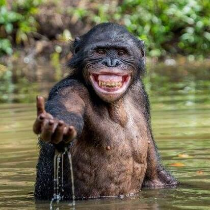
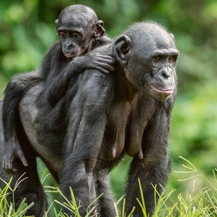
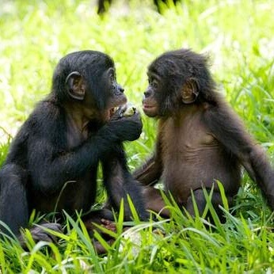
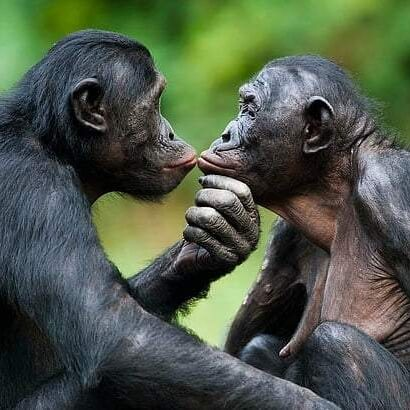
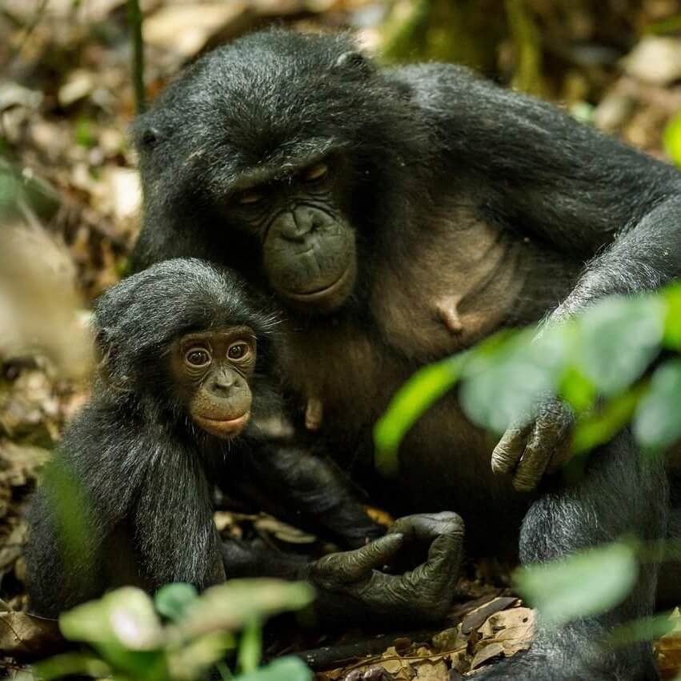

Bonobos
General
Bonobos live in an area of the Congo Basin in the Democratic Republic of the Congo. They typically live 40 years in captivity; their lifespan in the wild is unknown.
They make a new nest for sleeping in the trees every night. Bonobos are known for using tools, including using leaves as cover for rain and brandishing branches in social displays. 57% of its diet is fruit, but this is supplemented with leaves, honey, eggs, small insects, etc.
Bonobos are the most vocal of the great apes, using complicated patterns of vocalizations to communicate detailed information.
Bushmeat hunting is the greatest threat to bonobos and its root cause is extreme poverty. 90% of humans in the region where bonobos live can only afford to eat one meal a day. They are increasingly turning to wild sources of meat for sustenance; in fact 80% of the meat consumed is wildlife. They also hunt bonobos for profit in the bushmeat trade.
Bonobos are the most vocal of the great apes, using complicated patterns of vocalizations to communicate detailed information.
Bushmeat hunting is the greatest threat to bonobos and its root cause is extreme poverty. 90% of humans in the region where bonobos live can only afford to eat one meal a day. They are increasingly turning to wild sources of meat for sustenance; in fact 80% of the meat consumed is wildlife. They also hunt bonobos for profit in the bushmeat trade.
6 Reasons why Bonobos
Please click on each topic for further details
We share 98.7% of our DNA with bonobos – this means that bonobos (and chimpanzees) are our closest living relatives. This leads to many similarities between bonobos and humans, but also some key differences.
Fun fact: Humans are able to easily understand their facial expressions and some of their natural hand gestures, such as their invitation to play.
The dominant bonobo in a group is never a male, which is the main reason that bonobos are so peaceful. If any male in the group becomes aggressive, the females join forces and prevent him from hurting anyone. This is very unusual in the animal kingdom. Over time, bonobos have become much less aggressive than their relatives, including humans.
In addition to the diffusion of conflicts through the females in a group, bonobos have evolved to avoid fighting. Research shows that in a situation that had the potential to cause conflict (two individuals were in competition over food), chimpanzees had an increase in testosterone, which is related to competitiveness, and bonobos had an increase in cortisol, which is related to stress. This stress response leads bonobos to seek social reassurance and they hug and share instead of fighting.
The main way bonobos diffuse tension is certainly original – they have sex, or more specifically, they use social sexual contact. In their society, this is as common and friendly as a handshake. If anyone in the group, male or female, is feeling stressed, anxious, or irritated, someone will run over and give them a ‘bonobo handshake’. This kind of conflict resolution seems to be at the heart of their peaceful society.
Bonobos live only in one country, the Democratic Republic of Congo. Even though they live in a huge forest, they are very vulnerable to hunting, so that their population is believed to have declined sharply in the last 30 years. No one is sure how many are left in the wild, but estimations reach from 5,000 - 50,000. Because bonobos only bear offspring every 4 to 5 years, the population is slow to regenerate.
Our closest living relative
We share 98.7% of our DNA with bonobos – this means that bonobos (and chimpanzees) are our closest living relatives. This leads to many similarities between bonobos and humans, but also some key differences.
Fun fact: Humans are able to easily understand their facial expressions and some of their natural hand gestures, such as their invitation to play.
Females are in charge
The dominant bonobo in a group is never a male, which is the main reason that bonobos are so peaceful. If any male in the group becomes aggressive, the females join forces and prevent him from hurting anyone. This is very unusual in the animal kingdom. Over time, bonobos have become much less aggressive than their relatives, including humans.
Tribe of Peacemakers
In addition to the diffusion of conflicts through the females in a group, bonobos have evolved to avoid fighting. Research shows that in a situation that had the potential to cause conflict (two individuals were in competition over food), chimpanzees had an increase in testosterone, which is related to competitiveness, and bonobos had an increase in cortisol, which is related to stress. This stress response leads bonobos to seek social reassurance and they hug and share instead of fighting.
Social Beings
Bonobos have strong friendships and social bonds amongst themselves. They are capable of altruism, compassion, empathy, kindness, patience, and sensitivity. Bonobos love to share with family and friends, but when given a choice, they even prefer to share with strangers.
Bonobos have also highly individuated facial features, so that one individual may look significantly different from another. This is for facial recognition in social interaction.
Bonobo handshake
The main way bonobos diffuse tension is certainly original – they have sex, or more specifically, they use social sexual contact. In their society, this is as common and friendly as a handshake. If anyone in the group, male or female, is feeling stressed, anxious, or irritated, someone will run over and give them a ‘bonobo handshake’. This kind of conflict resolution seems to be at the heart of their peaceful society.
Highly endangered
Bonobos live only in one country, the Democratic Republic of Congo. Even though they live in a huge forest, they are very vulnerable to hunting, so that their population is believed to have declined sharply in the last 30 years. No one is sure how many are left in the wild, but estimations reach from 5,000 - 50,000. Because bonobos only bear offspring every 4 to 5 years, the population is slow to regenerate.
"Bonobos don't really have that darker side. So that's where they could really help us is how could it be that a species that has a brain a third of the size of ours can do something that with all our technological process we can't accomplish? Which is to not kill each other."
- Claudine André